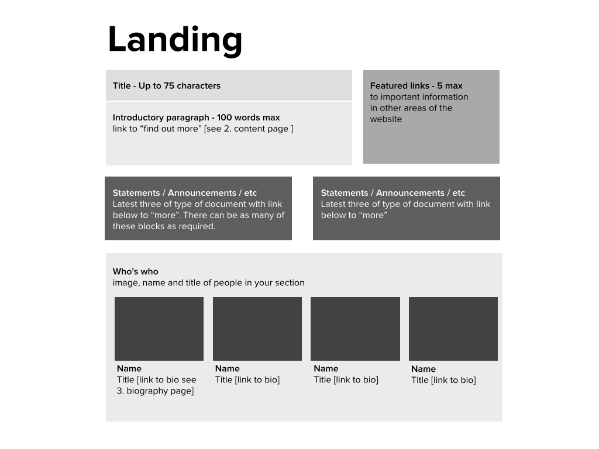

Print this content checklist and work through the points.
Many of the features on this page are flexible and optional based on the content. They are included here to show what is possible in general.
- You have 100 words (at most) to give a broad overview of your work. Tell users what you actually do.
- More detail (if necessary) can go in the How we work content template which is a link at the end of the overview.
- Featured links are optional. The fewer the better. These are intended to direct the user to the most relevant information for your organ or department across the ICC website.
- The sections below (statements/announcements) are flexible and will depend on your needs (see landing section examples for each organ and department). It is possible to feature content and to create lists showing the latest three of a certain type.
- Biographies will link to individual biographies (see biography template and examples).
- Include contact details if appropriate (see Contact template and examples).